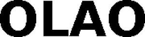

Trade Mark Journal No.2026/008 20 February 2026
WO0000001900936 (10,35,41,44)
Office of origin: European Union Intellectual Property Office (EUIPO)
Date of International Registration:28 November 2025
Date of designation in the UK:
28 November 2025

International priority date claimed: 28 May 2025
(European Union Intellectual Property Office (EUIPO))
(019194848)
- Class 10
- Telemetry apparatus for medical use; chromatographic apparatus for medical use; ultrasonic medical diagnostic apparatus; medical diagnostic apparatus for medical purposes; medical analytical apparatus for medical purposes; medical apparatus and devices; medical imaging apparatus; medical ultrasound apparatus; diagnostic apparatus for medical purposes; medical analysis instruments; magnetic treatment apparatus for medical use; physiological measuring apparatus for medical use; medical diagnostic instruments; diagnostic measuring apparatus for medical use; exercise simulating apparatus for medical purposes; temperature sensing apparatus for medical use; physical exercise apparatus, for medical purposes; medical apparatus for the relief of pain; apparatus for use in exercising muscles for medical use; apparatus for carrying-out diagnostic tests for medical purposes; diagnostic instruments for medical use; physiological apparatus for medical use; physiological monitoring apparatus for medical use.
- Class 35
- Assistance in franchised commercial business management; administration of the business affairs of franchises; advisory services relating to publicity for franchisees; advice in the running of establishments as franchises; providing assistance in the management of franchised businesses; business assistance relating to the establishment of franchises; advisory services relating to the operation of franchises; providing assistance in the field of product commercialization within the framework of a franchise contract; assistance in business management within the framework of a franchise contract; provision of assistance [business] in the establishment of franchises; provision of assistance [business] in the operation of franchises; advisory services (business -) relating to the establishment of franchises; advisory services (business -) relating to the operation of franchises; business assistance relating to starting and running a franchise; online advertising; preparation of advertisements; advertising and advertisement services.
- Class 41
- Sports and fitness; sports tuition; sports activities; sports training; sports information services; sports education services; sporting and recreational activities; physical fitness centres; fitness and exercise instruction; physical fitness training services; physical fitness education services; health and fitness training.
- Class 44
- Therapy (physical -); therapy services; heat therapy [medical]; physical therapy; physiotherapy [physical therapy]; occupational therapy and rehabilitation; counseling relating to occupational therapy; health care relating to relaxation therapy; physiotherapy; nutrition counseling; nutrition consultancy; advice relating to nutrition; consultancy relating to nutrition; sports medicine services; beauty information services; beauty advisory services; hygienic and beauty care; health counseling; health screening services; health risk assessment; health assessment surveys; occupational health consultancy; providing health information; fitness testing; medical testing for fitness evaluation; medical testing services, namely, fitness evaluation.
OLAO Health GmbH
Representative: MANITZ FINSTERWALD PATENT- UND RECHTSANWALTSPARTNERSCHAFT MBB, Martin-Greif-Str. 1, 80336 München, GERMANY